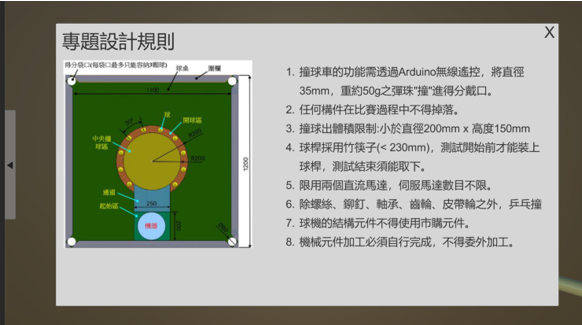
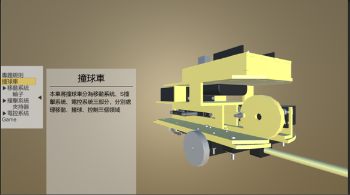
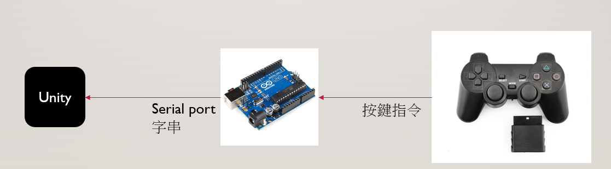
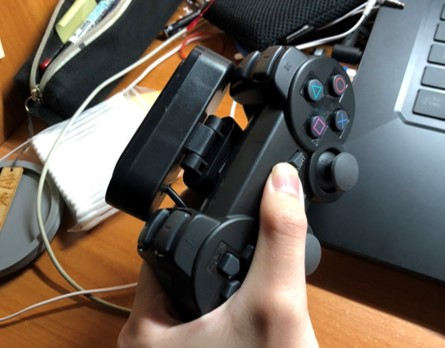

本專題由撞球車做延伸, 以Unity與Vuforia Engine開發AR展示系統, 同時設計AR小遊戲利用物理引擎實現在虛擬環境中執行撞球車的任務
此部分利用panel與button的組合說明撞球車專題的規則與簡介撞球車之設計, 並且搭配animation的腳本製作爆炸圖動畫, 為提供使用者更多觀測角度, 本文利用Input接收滑鼠訊號以改變模型姿態
 UI設計
延續自撞球車的設計, 本專題同樣利用PS2手把作為輸入源, 在電腦端利用Arduino+PS2接收器將控制訊號傳送給電腦對虛擬環境的撞球車做控制 , 同時將webcam固定在PS2手把的下方, 方便利用webcam作為AR系統之影像輸入
AR遊戲控制流程
PS2控制手把